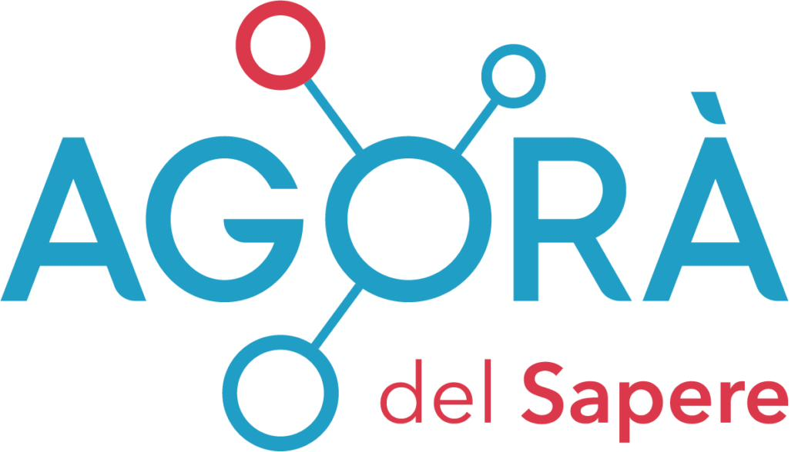

Agorà del Sapere
Un percorso didattico online sulla piattaforma Agorà del Sapere, rivolto alle scuole di ogni ordine e grado. L'epidemiologa Carlotta, la biologa Shirley e la chimica Sharon hanno accompagnato ragazze e ragazzi alla scoperta del ruolo dello scienziato e del metodo scientifico nella società di oggi. Guarda online →